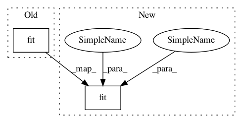

c99295e1903952b3b806c4fd641e28f852b17c36,autokeras/utils.py,ModelTrainer,train_model,#ModelTrainer#,101
Before Change
if constant.DATA_AUGMENTATION:
self.model.fit_generator(flow, epochs=constant.EPOCHS_EACH)
else:
self.model.fit(self.x_train, self.y_train,
batch_size=batch_size,
epochs=constant.EPOCHS_EACH,
verbose=self.verbose)
loss, _ = self.model.evaluate(self.x_test, self.y_test, verbose=self.verbose)
if self._converged(loss):
break
return self.minimum_loss
After Change
callbacks=callbacks,
verbose=self.verbose)
else:
self.model.fit(self.x_train, self.y_train,
batch_size=batch_size,
epochs=constant.MAX_ITER_NUM,
validation_data=(self.x_test, self.y_test),
callbacks=callbacks,
verbose=self.verbose)
except NoImprovementError as e:
if self.verbose:
print("Training finished!")
print(e.message)
In pattern: SUPERPATTERN
Frequency: 3
Non-data size: 2
Instances
Project Name: keras-team/autokeras
Commit Name: c99295e1903952b3b806c4fd641e28f852b17c36
Time: 2018-04-18
Author: jhfjhfj1@gmail.com
File Name: autokeras/utils.py
Class Name: ModelTrainer
Method Name: train_model
Project Name: ClimbsRocks/auto_ml
Commit Name: 047a679e5d329d69ca2ddc4c21ffe213886331c4
Time: 2017-07-05
Author: ClimbsBytes@gmail.com
File Name: auto_ml/utils_model_training.py
Class Name: FinalModelATC
Method Name: fit
Project Name: ClimbsRocks/auto_ml
Commit Name: 87778974fce86b21bc7a6418965a28a67eaac4ff
Time: 2016-08-07
Author: climbsbytes@gmail.com
File Name: auto_ml/predictor.py
Class Name: Predictor
Method Name: train